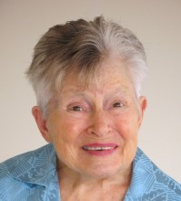

Please note: the AAS Obituaries are temporarily being hosted on this website while their full content is being ingested into the PubPub publishing platform newly adopted by the Bulletin of the American Astronomical Society. When the migration is complete, your existing links will take you to the final, migrated content. Contact peter.williams@aas.org with any questions.
Jaylee M. Mead (1929-2012)
The astronomical and arts communities lost an exceptional person when Barbara Jaylee Montague Mead died at her home in Washington, DC, of congestive heart failure. Jaylee and her husband Gilbert D. Mead relocated to Washington, DC from Greenbelt, MD after their retirement from NASA’s Goddard Space Flight Center (GSFC) in the early 1990s.
Jaylee Mead (née Montague) was born near Clayton, NC, on Flag Day, 14 June 1929, one of two children of Roger and Barbara Montague, who were the owners of a general store in Clayton. Encouraged by her parents, Jaylee graduated from the Women’s College of what is now the University of North Carolina in Greensboro in 1951 with a degree in mathematics. She then moved on to Stanford University and earned a master’s degree in education in 1954.
Jaylee joined NASA in 1959 as a mathematician, but soon developed an interest in astronomy. She finished her PhD in astronomy at Georgetown University in 1970 under the guidance of Vera Cooper Rubin. Jaylee and Vera did some work on computerized astronomical catalogs, which led to a strong interest in developing a library of digitized astronomical catalogs in collaboration with the Centre de Données astronomiques in Strasbourg, France. She began an ongoing collaboration with the National Space Science Data Center/World Data Center A for Rockets and Satellites to computerize some fundamental catalogs, including all of the Durchmusterung catalogs (Bonner, Southern, Córdoba, and Cape Photographic), an immense project that took years to complete. Catalogs were keypunched to cards and then verified by punching the data again and comparing the data sets.
Jaylee made a difference wherever she went and whatever she did. She excelled in management because everybody liked her. In all the years that I worked with her, I never heard anyone say anything derogatory about her. She always made an effort to be pleasant to everyone, even when she faced challenges in her job. “One could feel the positive energy in a room increase dramatically when Jaylee entered,” recalled her colleague, Fred B. Schaffer, Jr., in a tribute essay.
She and husband Gil became very generous patrons of the arts in Washington, including the Mead Center for American Theater, and participated in Goddard’s employee theater group for many years. They provided a matching grant of $10,000 for the construction of a public observatory in Greenbelt, Maryland. That observatory remains active and holds public nights on several days every month during clear weather.
While a graduate student at Indiana University, I completed a project to plot star fields from the AGK3 catalog to agree with the scale of asteroid plates taken with a 10-inch Cook triplet telescope at the Goethe Link Observatory. The objective was to match the glass plates to automatically identify AGK3 stars for use as astrometric standards to measure accurate asteroid positions. As a result of this work, I was given a postdoctoral position at NASA’s Goddard Space Flight Center. Following the postdoc, I joined the National Space Science Data Center (NSSDC) as a contractor employee upon the recommendation of Jaylee to its Director, Dr. James I. Vette. In my position as the head of the Astronomical Data Center (ADC) at the NSSDC, Jaylee and I worked together for the next 15 years as she was promoted to Assistant Chief of the Laboratory for Astronomy and Solar Physics and Associate Chief of the Space Data and Computing Division.
Jaylee was associated with IAU Commission 5, Documentation and Astronomical Data as a member of its organizing committee. She was also associated with IAU divisions on Stars and Stellar Physics, Space and High-Energy Astrophysics, and Technologies and Data Science, plus commissions on Space and High-Energy Astrophysics and Stellar Classification. She was honored with the Goddard Award for Outstanding Service, the Women in Aerospace Lifetime Achievement Award, and the 1986 NASA Medal for Scientific Leadership.
Jaylee is survived by a sister, Mary Montague Watts of Raleigh, NC, and by several stepchildren, step-grandchildren, and step-great-grandchildren.
Photo: NASA Goddard Space Flight Center
Obituary written by: Wayne H. Warren (PHI Applied Physical Sciences)
Additional links:
BAAS Citation: BAAS, 2017, 49, 036